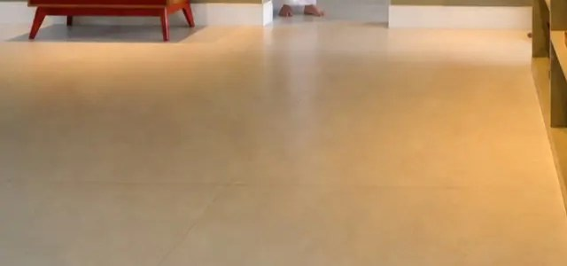
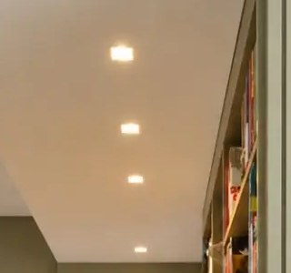
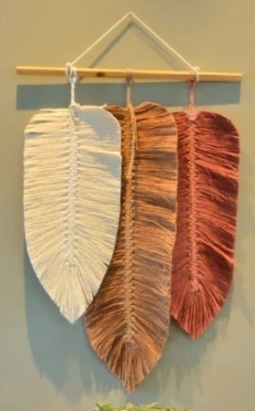
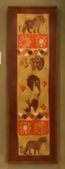
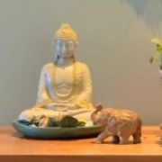
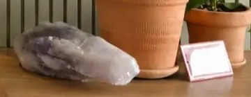

Apartamento 01
Rio Vermelho, do piso à luz.
Piso novo, cores novas, uma marcenaria personalizada para as moradoras e uma luz pensada para valorizar a decoração.
- Bairro
- Rio Vermelho, Salvador
- O que mudou
- Piso, cores, marcenaria e iluminação
- Fotos
- Roberto Moreira Rego
O que tem por trás desta foto.

1
A luz
A iluminação também foi toda nova.
“Usamos lâmpadas com temperatura de cor mais baixa para criar uma atmosfera mais intimista e valorizar os itens de decoração.”
2
As cores
As cores do apartamento foram trocadas. O verde das paredes continua no painel de ripas.
“Trocamos o piso existente, as cores do apartamento…”
3
A marcenaria
A marcenaria foi desenhada para a rotina das moradoras, não comprada pronta.
“Fizemos uma marcenaria personalizada para atender as necessidades das moradoras.”
4
O piso
O piso antigo saiu. O novo é claro e contínuo, da sala ao corredor.
“Trocamos o piso existente.”
Toque nos números da foto.
[ I ] A marcenaria
Feita para quem mora.
A parte desenhada sob medida: a estante embutida, o painel de ripas no verde das paredes e o tampo de madeira que recebe as plantas e a pedra.



[ II ] As cores
O verde segura, o vermelho fala.
“Personalidade não precisa pedir licença. O vermelho aparece, mas o conjunto continua elegante.”
- as paredes
- o aparador
- a madeira
- o piso, na luz quente
Cores tiradas das fotos do apartamento.
[ III ] A luz e os objetos
Uma luz que mostra as coisas.
A iluminação nova, mais baixa e mais quente, foi pensada para valorizar os itens de decoração.
“O espaço da casa se revela através das escolhas, dos contrastes e dos detalhes.”


as folhas de macramê
o painel com os bichos
o Buda e o elefante
a pedra e o barro no tampo

Quer um apartamento pensado assim?
A conversa é pelo WhatsApp, com a própria Débora. Se preferir, conte a sua casa antes, em seis perguntas: o resumo vai para o WhatsApp dela.